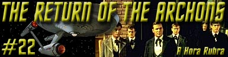

|
Srie
Clssica
Temporada 1

Anlise do episdio por
Carlos
Santos


|
MANCHETE
DO EPISDIO Data Estelar: 3156.2. A Enterprise est em rbita do planeta Beta 3, investigando o desaparecimento de uma outra nave, a USS Archon, desaparecida naquele local 100 anos antes. Em terra, um grupo de descida, formado pelos tenentes Sulu e ONeil, atacado por locais vestidos em tnicas e agindo de forma semelhante a Zumbis. O'Neil se desespera e foge pelas ruas enquanto Sulu transportado de volta nave, mas no sem antes ser atingido por uma estranha arma em forma de basto usada por seu perseguidor. Sulu chega a nave com a memria afetada e agindo de forma de estranha, como se tivesse sido vtima de algum tipo de lavagem cerebral. Kirk ento resolve formar um novo grupo de busca e descer ao planeta para procurar por O'Neil e descobrir o que houve com o piloto da Enterprise. Uma vez em terra, eles se deparam com uma populao extremamente pacifica e submissa. Um dos transeuntes interpela o grupo de descida, curioso sobre se a tripulao da Enterprise havia vindo para o festival e avisando que a hora rubra se aproxima. O transeunte chama uma mulher que passa, de nome Tula, perguntando se seu pai poderia receber Kirk e seu pessoal. De repente, assim que o relgio da praa toca indicando dezoito horas, toda a populao at ento calma, enlouquece, iniciando uma indiscriminada onda de violncia, saques e roubos. Os membros dos grupos de descida fogem por entre a multido at uma casa pertencente a um homem de nome Reger, que, a despeito das suspeitas dos outros presentes, especialmente um de nome Hacom, aceita o grupo de Kirk e lhes fornece um quarto. Hacom protesta e deixa o local sobre ameaas. Reger instala os membros do grupo de Kirk, mas estranha quando este diz que no pretende participar do festival e se nega a responder perguntas sobre uma entidade que parece controlar o lugar e que referida apenas como Landru. Do lado de fora a confuso continua. Na manha seguinte, exatamente s seis horas, a convulso coletiva termina e todos os habitantes voltam condio de calmaria anterior ao festival. Tula retorna a sua casa em choque, o que leva um dos membros da equipe de Kirk, o socilogo Lindstrom a criticar Reger, pai da moa, por no ter feito nada para resgat-la. Enquanto McCoy ministra um sedativo em Tula, o ainda mais desconfiado Reger e do seu amigo Tamar ficam atnitos ao concluir que os recm chegados no so parte do grupo (alguma espcie de conscincia coletiva ou prxima reinante na sociedade local) e pergunta se eles so Archons. Kirk no responde, mas neste momento Hacom retorna trazendo consigo dois dos inspetores, seres iguais aos que haviam atacado Sulu e ONeil anteriormente. Eles matam Tamar por este ter duvidado dos inspetores e ordena que Kirk e seu pessoal os acompanhem, mas este se nega, o que deixa os inspetores confusos. Aproveitando a hesitao dos inspetores, Reger deixa e local dizendo que os levaria para um lugar seguro, mas durante o caminho eles so atacados pela populao, aparentemente controlados por Landru. Kirk ordena o uso dos feisers em tonteio. Eles encontram o tripulante ONeil entre as pessoas que atingem e o trazem junto. Eles finalmente atingem o tal lugar seguro. Aps estranharem alguns itens de tecnologia que parecem discrepantes com o nvel de desenvolvimento aparente do lugar, Reger revela que toda a populao do planeta faz parte do referido grupo, pelo qual todos so absorvidos, e que teria sido este o destino da tripulao da desaparecida nave estelar USS Archon, um sculo antes. Reger fala que os Archons (como ficaram conhecidos os tripulantes da antiga nave) vierem anos antes e atacaram o grupo, rebelando-se contra o controle de Landru e unindo-se a uma pequena resistncia local. Esta resistncia estava agora resumida ao prprio Reger, a Tamar, agora morto, e por uma terceira pessoa a quem ele no conhecia. S ento Kirk se da conta que Landru poderia ter poder para destruir uma nave (afinal a Archon no deixou vestgio na rbita do planeta). Ele contata a Enterprise, e informado por Scott no comando que esta sob ataque de um tipo de raio de calor, que exige que toda a fora da nave, inclusive dos propulsores seja redirecionada para os escudos da nave a fim de evitar sua destruio, entretanto sem propulsores a rbita da nave comea a decair, o que deixa a Kirk doze horas para resolver o mistrio antes que nave queime na atmosfera. Aps perderem a comunicao com a nave, um sinal sensor detectado por Spock, e em seguida uma projeo que se identifica como Landru aparece. Kirk tenta comunicar-se, mas esta tentativa mostra-se intil, e em seguida todos os presentes so colocados inconscientes por algum tipo de ondas sonoras. Quando Kirk recobra a conscincia descobre que McCoy no est mais entre eles e que foram removidos para uma espcie de cela e desarmados. Kirk e Spock comeam a fazer conjecturas sobre a natureza dos inspetores, de que estes poderiam ser mquinas e no humanos. Neste momento McCoy reaparece trazido por um dos inspetores, transformado como a populao de Beta 3. Os inspetores retornam e ordenam a Kirk que este os siga, ameaando-o de morte. Sem opes ele obedece, sendo levado a um local conhecido como sala de absoro. L um homem chamado Marplon aparece e prepara o que seria a converso de Kirk. Em seguida os inspetores buscam Spock para efetuar o mesmo procedimento com o Vulcano. Este cruza com um aparentemente convertido Kirk e depois preso ao equipamento que realizar o processo, entretanto, quando o inspetor que acompanhava Spock deixa o local, Marplon revela ao primeiro oficial da Enterprise ser ele o terceiro rebelde de quem Reger havia falado, e devolve as armas que lhe haviam sido tiradas. Ele evita que o Vulcano seja convertido e diz que Kirk tambm est a salvo. Spock encontra Kirk e Lindstrom e ambos concluem que Landru na verdade uma mquina e decidem encontr-la e desativ-la, mesmo que para isto precisem passar por sobre a primeira diretriz, a qual Kirk afirma no se aplicar na presente questo. Reger reaparece acompanhado de Marplon, que agora devolve tambm os comunicadores. Enquanto Kirk tenta convencer Reger e Marplon a ajud-los a achar Landru, McCoy, transformado percebe que os dois no foram afetados e comea a gritar de forma histrica obrigando Spock a adormec-lo com o toque Vulcano. Reger e Marplon esto aterrorizados com a possibilidade de serem descobertos por Landru. Kirk entra em contato com Scott que informa que a situao na nave ainda critica, o que adiciona um sentimento maior de urgncia a Kirk, que pressiona mais fortemente os amotinados. Reger de descontrola e entra em pnico, mas Marplon acaba levando Kirk ao local onde supostamente Landru poderia ser contatado. Uma projeo do mesmo homem que havia se apresentado a Kirk antes reaparece, e disposta a eliminar Kirk e Spock e todos os que tiveram contato com o pessoal da Enterprise. Eles atiram na parede atrs da projeo, tendo ento a viso do verdadeiro Landru, um computador projetado e construdo pelo verdadeiro Landru, morto 600 anos antes. Eles tentam destruir a maquina usando os feisers, mas um campo de fora impede que isto seja feito. Kirk comea ento um duelo de eloqncia com o computador acusando-o de ser prejudicial ao grupo, fazendo com que a maquina, incapaz de responder as criticas de Kirk entre num ciclo de autodestruio, deixando toda a populao livre da influncia de Landru. Kirk e a Enterprise partem, mas deixam no planeta o socilogo Lindstrom junto com uma equipe para ajudar a adaptao da populao a sua nova situao.
A Enterprise continua indo onde nenhum homem jamais esteve e em sua viagem encontrando seres humanos para tudo que lado, no interessa aonde se v. Fascinante. Neste caso isto provavelmente acontece, pois a dinmica proposta para o segmento baseada em temas bem contemporneos a poca de sua primeira exibio. Return of the Archons um episodio sobre o qual se podem ter algumas leituras diferentes, sendo a principal o controle da mquina (ou computador) sobre o homem, mais um dos temas recorrentes de Roddenberry. Aqui, encontramos toda uma sociedade controlada por um computador que julga e executa o que melhor para o grupo. Na verdade, o grupo foi uma inveno da dublagem, pois o correto seria dizer corpo (body), assim como lawgivers, cuja traduo correta seria legisladores e que acabou virando inspetores, detalhes que se perderam na traduo para o portugus. Entretanto, a forma como o domnio sobre o grupo mostrado, com um forte controle sobre o individuo usando para isto um corpo policial, no caso os tais inspetores, para manter todos sob vigilncia constante e garantir que nada saia do controle de Landru, bem como que todos estejam a servio deste grupo, mesmo que isto signifique eliminar indivduos da coletividade, exibe uma mal disfarada critica ao sistema comunista reinante na ento Unio Sovitica. Uma critica a algumas orientaes religiosas e o controle exercido sobre seus membros pelo uso do medo, tambm pode ser encontrado, mas em escala bem menor. Todos estes temas bem humanos, mais o mistrio do desaparecimento da nave estelar Archon cem anos antes, serve de agente provocador para a investigao da Enterprise, e criam a motivao e o enredo do episodio. Embora seu tom panfletrio tenha se esgotado com as mudanas acontecidas na grande maioria dos paises comunistas, e a discusso sobre a relao homem x mquina tenha perdido espao para outros temas mais relevantes, este um episodio importante pois nele James Kirk de forma deliberada e consciente chuta o balde da primeira diretriz, que ele interpreta como quer (sem entrar no mrito da correo ou no desta interpretao). Kirk detona com a primeira diretriz diversas vezes ao longo da Srie Clssica, mas neste episdio vemos de forma didtica e absolutamente livre de erros que ele se reserva o direito de faz-lo sempre que sua intuio o aconselhar assim. Embora a primeira diretriz seja um elemento discutvel (filosoficamente talvez o mais discutvel de Jornada) este caso exemplifica de forma clara o por que da fama que Kirk adquiriu de praticar diplomacia cowboy. O episdio tem seu primeiro problema na ambientao aliengena, um cenrio extremamente pobre em imaginao. Coisas como indumentrias grotescas como em Arena ou fundos pintados em tela at se entendem devido s dificuldades de produo da poca, mas representar toda uma populao aliengena como uma tpica cidade Americana do fim de sculo XIX um pouco demais. Alguns comparam a forma de controle exercida por Landru sobre os habitantes de Beta 3 com elementos da coletividade Borg (de A Nova Gerao), mas diferenas significativas devem ser apontadas, pois na coletividade no h em crebro central controlando o corpo, se descontado claro, o surgimento da Rainha Borg no filme Primeiro Contato, entretanto este controle, que insinuado se estender sobre todo o planeta, no um controle absoluto, o que pode ser percebido pela simples existncia da alguns no convertidos e explica o papel dos inspetores. Mais do que isto, aqui a absoro do individuo por Landru no parecer dar a este seu conhecimento, pois assim o fosse, assim que Sulu foi absorvido ele deveria saber da presena da Enterprise. Mesmo assim de se estranhar que sendo imensamente poderoso como demonstrado, Landru no tenha detectado a presena da Enterprise e destrudo a nave mais cedo. Foram necessrios dois grupos de descida para que um ataque fosse iniciado, o que incoerente, afinal, Landru sabia quem eram os Archons e se os destruiu antes, lgico concluir que o faria de novo, afinal para um computador tanto faz passaram-se cem anos ou cem dias, ao menos em tese. Fica claro que este problema foi criado apenas para impedir que Scott trouxesse todo mundo de volta a nave e o episodio acabasse sem que Kirk tivesse uma justificativa para destruir o computador sem se importar com as conseqncias de tal ato. Outra incoerncia a necessidade de fazer com que Kirk e seu grupo passassem pelo aparelho de absoro pois no inicio do episdio isto foi feito com Sulu com apenas um disparo do basto mgico de um dos inspetores (TM). Esta conduo foi editada obviamente para contribuir com o clmax do episdio, mas o descuido neste caso peca ainda mais contra ele (ficando grosseiramente artificial). Alem disto estranho o fato de no haver aparentemente ningum preocupado com a reconstruo da cidade aps a destruio causada pelo festival, visto que a populao, aps o seu termino, voltou ao seu estado letrgico de antes, fora ainda o fato de um computador sobreviver seiscentos anos sem manuteno, algo que soa tambm um bocado estranho. Um desperdcio de material a postura de Spock que passa todo o tempo se comportando exatamente como um computador, analisando informaes e fornecendo resultados a Kirk de forma estril e sem nenhuma importncia dramtica para o contexto, mal utilizando o potencial do Vulcano. Tal comportamento, talvez tenha a inteno de exemplificar em Spock o ideal de um bom computador, totalmente a servio do homem como um fiel assistente, ou ferramenta, nada mais nada menos. Uma anttese de Landru, o computador mau, que pretende sobrescrever os valores humanos. Esta caracterizao vai desaguar na ausncia de bom senso que a forma encontrada por Kirk para deter Landru. Aqui Kirk usa do toda a sua eloqncia na pratica da lgica circular mais bsica para fazer com que um computador que conseguiu controlar a populao de todo um planeta durante seiscentos anos simplesmente entrasse em crise existencial e em colapso em cerca de dois minutos. Para fazer isto, a cena seria mais bem entregue a Spock, o que talvez no soasse to inverossmil, mas necessrio que Kirk use da criatividade humana para alcanar a vitria, criatividade que uma mquina seja ela Landru ou Spock pelo menos neste episodio - no poder ter. Ao longo da Srie Clssica, Spock tem no apoio a seu capito (e seu amigo) sua principal tarefa, mas o problema a forma de demonstra-lo isto. Nicholas Meyer o fez com maestria em nos filmes para o Cinema da turma de Kirk e cia., provando que o problema acertar a mo na hora de fazer isto. Roddenberry no conseguiu, pelo menos neste episodio. Um raro exemplo de continuidade disfarada entre episdios na Srie Clssica pode ser encontrado quando Kirk pergunta a Spock se ele no achava antiquado o uso da fora fsica aps o Vulcano esmurrar um dos inspetores, numa referencia clara ao soco desferido por Kirk no episdio Tomorrow is Yesterday. Uma sequncia sem dvida engraada, efeito que consegue ser executado com sucesso em mais uma ou duas situaes dentro do episdio, e salva o final do segmento de sua indisfarvel e desnecessria lio do dia.
The
Return Of The Archons um segmento repleto de inconsistncias e com uma
trama intencionalmente refletida e inflada de maneira artificial para preencher
uma hora de televiso e produz o nascimento de um dos grandes clichs de Jornada,
o cenrio de Kirk levando alguma inteligncia artificial ao colapso atravs de
um argumento banal de lgica circular. As interpretaes do conceito de inteligncia
coletiva aqui apresentado se perderam no tempo, se que foram interessantes algum
dia, alm de se chocarem grosseiramente com mais um cenrio de desenvolvimento
paralelo ao da Terra, refletindo mais a limitao oramentria vigente naquela
poca do que qualquer viso de uma histria a ser contada, um pau pauprrimo segmento.
Hacom: Do you say that Landru is not everywhere? Lawgiver: You attacked the body. You have heard the word and disobeyed.You will be absorbed. Scott: We're going down, Captain. Unless we can get those beams off us so we can use our engines, we're due to hit atmosphere in 12 hours Kirk:
Are you suggesting that the Lawgivers are mere computers, that... they aren't
human? Kirk:
Don't you know me? Lindstrom:
Well, this is simply ridiculous, a bunch of stone-age characters running around
in robes. Spock:
We are not Archons, Marplon. Kirk:
What is your theory, Mr. Spock? Kirk:
Mr. Spock, the plug must be pulled." Kirk: Isn't that somewhat old-fashioned? Kirk: You said you wanted freedom. It's time you learned that freedom is never a gift. It has to be earned. Landru: Obliteration is necessary. The infection is strong. For the good of the body, you must die. Landru: The good of the body is the prime directive. Spock: Not necessary, Captain. They have no guidance, possibly for the first time in their lives. Kirk: The evil must be destroyed. Kirk:
You would make a splendid computer, Mr. Spock.
Histria
de Gene
Roddenberry Elenco: Harry
Townes como Reger Episdio
anterior | Prximo episdio |